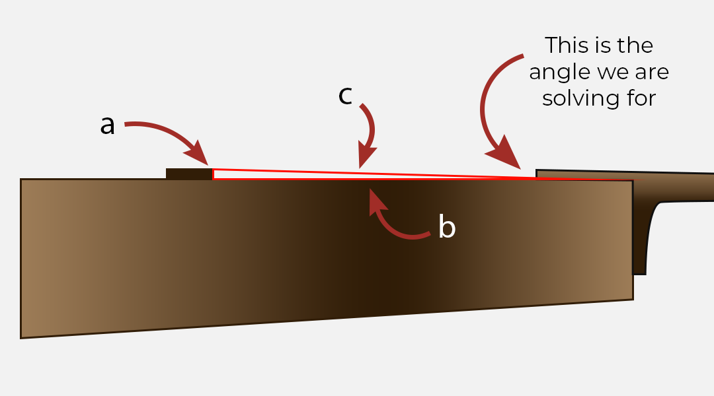
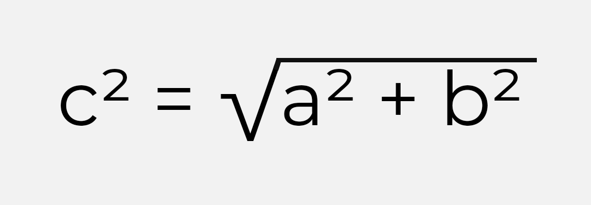
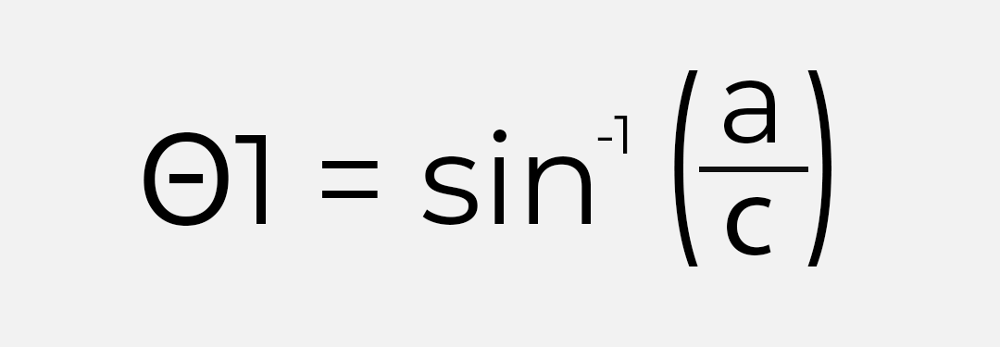

Scale Length:
Fret Number Where Neck Meets The Boday:
Bridge Height:
To calculate your neck angle, picture the top of your guitar as a right triangle.
Side A is the height of your bridge from the top of your guitar. Side B is the length from the fret that meets the body of your guitar to the intonation point. With those two Sides, you can calculate for Side C using pythagorean theorum.
With your sides calculated, you can now solve for your angles. We are looking for Angle θ1, which is our neck angle. Solve for Angle θ1 using Sin -1.
The solution to this equation is your neck angle.